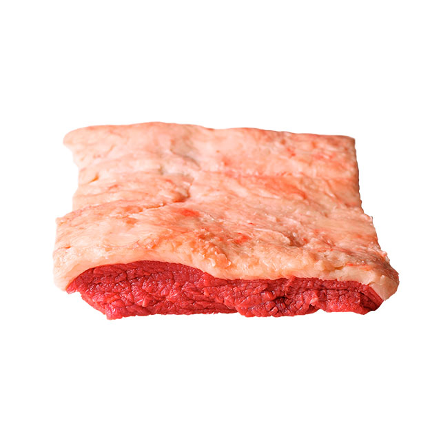

Mapa CarneCerta
Versão premium e elegante do contra file
A capa do contra file destaca a textura, o acabamento e a apresentação ideal para grelha, churrasqueira e preparos sofisticados.

Ideal para • churrasco • grelha • apresentação premium
Sabor
5/5
Intenso
Apresentação
5/5
Premium
Versatilidade
4/5
Alta
Abrir recomendador inteligente
Capa do Contra File
Uma opção elegante para quem busca um corte com sabor forte, acabamento superior e resposta excelente em pratos de fogo direto.
A capa do contra file é valorizada pela sua textura, aparência refinada e pela capacidade de entregar uma experiência marcante em grelha e churrasqueira.
Churrasco
Grelha
Apresentação premium
4.8
Escolha premium
Excelente para ocasiões especiais, quando a proposta é unir sabor marcante com uma apresentação refinada e impactante.
Ideal para
Dica do açougueiro IA
Tempere de forma simples e deixe a superfície dourar bem para valorizar o sabor e a textura do corte.